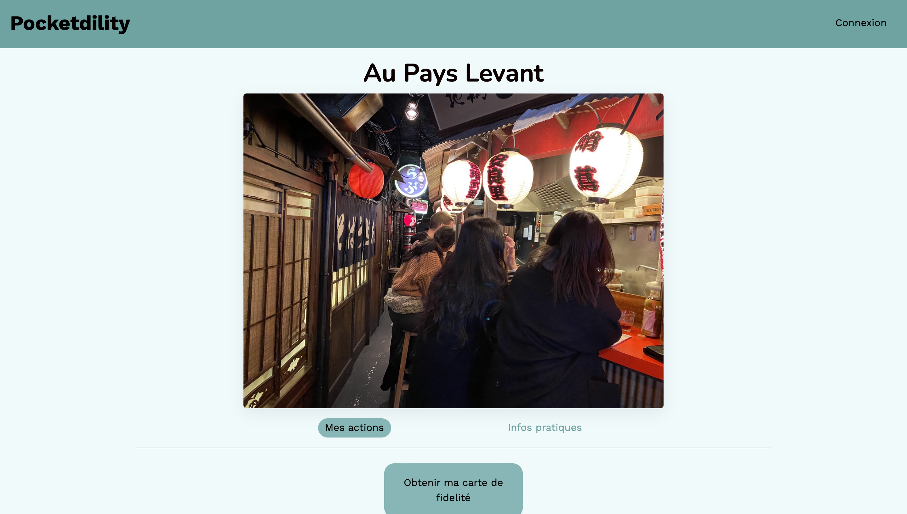
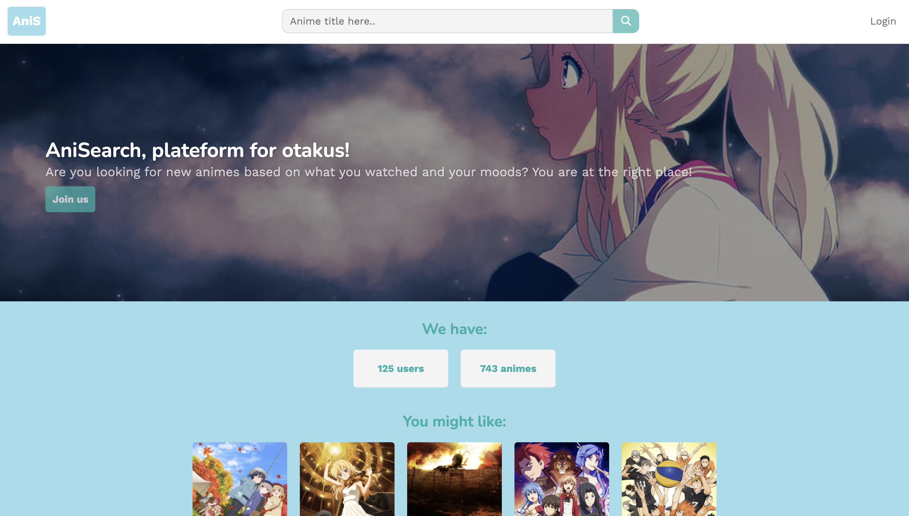
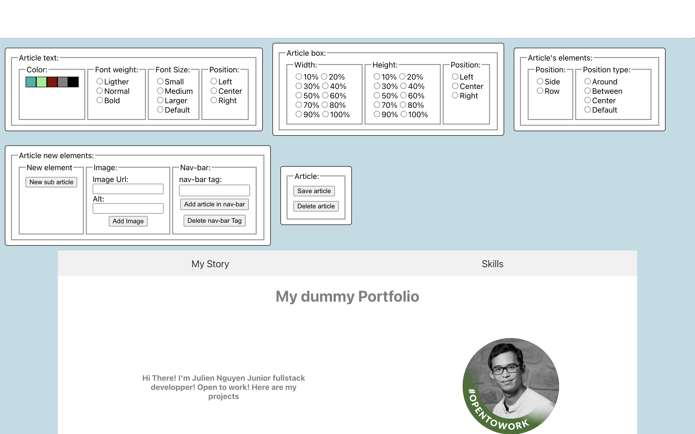

My Story
I worked as quality engineer for 4 years at Horiba. The pandemic arrived, I was wondering about my life if I was very happy with my current job. But I wasn't. I think this is the right time to do something that can stimulating me.
I quit my job to start a new life to become a fullstack web developer with "Le Wagon". I learned how to code entirely a website by using Ruby on Rails for the back-end, Stimulus for the front-end.
Skills

Porfolio
Ruby on rails, PostgreSQL, Fetching in our datas, Stimulus, Redis, DML, Responsive
My first App in French, allowing you to have your loyalty card integrated into your smartphone. It also allows to have more details on the dishes, with an associated image. For restaurateurs, the site makes to have a follow-up of their number of weekly, monthly and annual customers.
link: here
Ruby on Rails, PostgreSQL, Fetching from Anilist, ETL, fetching in our datas, Stimulus, Responsive
search-my-anime is my first Ruby on rails App only made by myself. You can create an account that save in ours datas. When you look for new animes, it gonna make an API fetch to generate my datas. You can also have stats on what kind of animes you like, and some news recommandations!
link: here
React, UseState, UseContext, No Code App, custom single page
This is my first React Project ! I most likely using "UseContext" and "useState". As you can see , the App looks like my portfolio, but it's a nocode React App I made by myself! I can almost replicate my porfolio with this App. Do to this, just Double Click on every elements you want to personnalize! Give it a try !
link: here
React, Fetching from Anilist API, ETL
This project is based on my other project on RoR. I tried to learn React so I did this project for practicing React components! This app is when you are looking an new Anime, it can find you a new anime based on your choice and shows up only animes you didn't watch based on your Anilist Account(if you have one)!